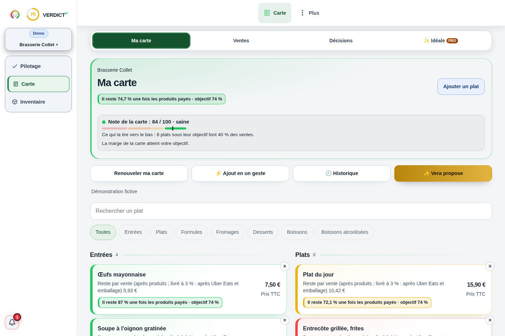

Comprendre le sujet
Contribution : ce que laisse chaque vente
La contribution est le prix HT diminué des coûts variables associés à la vente.
La réponse complète et ses limites
La contribution est le prix HT diminué des coûts variables associés à la vente. Elle sert à couvrir les charges fixes, puis à former un résultat dans le périmètre étudié. Comparez la contribution unitaire et totale : le plat qui laisse le plus par vente n’est pas forcément celui qui contribue le plus sur le mois.
Comprendre
La méthode, en clair.
LES POINTS QUI CHANGENT LA LECTURE
La méthode, en clair.
Des repères à appliquer dans votre établissement. Le détail reste accessible, sans perdre le fil.
Préciser les coûts retirés
Si vous retirez uniquement les ingrédients, vous mesurez une contribution matière. Pour une vente livrée, ajoutez emballage, frais de canal et autres coûts variables pertinents. Donnez un nom au périmètre pour que deux résultats soient comparables.
La TVA collectée n’est pas un produit disponible pour couvrir vos coûts HT. Utilisez le prix HT de la vente et une base cohérente pour les frais, en faisant confirmer le traitement des taxes non récupérables si nécessaire.
Le volume change la priorité
Un plat laisse 12 € par vente et se vend 80 fois : 960 €. Un autre laisse 11 € et se vend 140 fois : 1 540 €. Le second contribue davantage au total, même si le premier laisse un euro de plus à l’unité.
La popularité seule ne tranche pas davantage. Si la contribution unitaire est négative, davantage de ventes augmente le déficit de ce périmètre. Examinez aussi temps, ruptures et rôle du produit dans le panier.
Relier la contribution à la structure
Additionnez les contributions et comparez-les aux charges fixes de la même période. Quand la somme couvre ce fixe, le modèle atteint son équilibre sous ces hypothèses. Les coûts absents et les variations de capacité doivent encore être contrôlés.
Calculer
LE LABORATOIRE
Vos hypothèses.
Une lecture immédiate.
Modifiez les données, observez le résultat, puis vérifiez ce que le calcul permet de conclure.
Interpréter
UN SCÉNARIO, JUSQU’AU BOUT
Le calcul, jusqu’au bout
De la vente à ce qui reste
Les 700 € constituent un résultat incrémental du canal avant les charges communes non affectées. Ils ne sont pas le résultat net du restaurant.
Exemple fictif · hypothèses modifiables
| Contribution unitaire | 8 € |
|---|---|
| Sur 200 commandes | 1 600 € |
| Après 900 € de surcoût fixe du canal | 700 € |
Les montants sont arrondis pour la lecture.
Les calculs gardent leur précision.
Les questions qui restent
Contribution et marge matière sont-elles identiques ?
Seulement si le périmètre variable retenu contient uniquement la matière. Emballage et commissions changent ce périmètre.
Une contribution positive signifie-t-elle rentable ?
Elle aide à couvrir le fixe. Le résultat dépend encore du volume total et des charges restantes.
Sur quoi repose cette lecture
Les formules et hypothèses sont affichées pour être contrôlées. Les exemples chiffrés sont fictifs et ne constituent pas des statistiques de métier. Les définitions et repères institutionnels utilisés par Verdict sont regroupés dans les sources.
Agir
Votre prochaine action
Nommez les coûts inclus, calculez la contribution totale puis vérifiez les charges restant à couvrir.
LES CHIFFRES NE VIVENT PAS SÉPARÉMENT.
Reliez cette décision
au reste de votre activité.
Ventes, carte, inventaire : découvrez la lecture proposée par Verdict, avec vos données et vos hypothèses.
